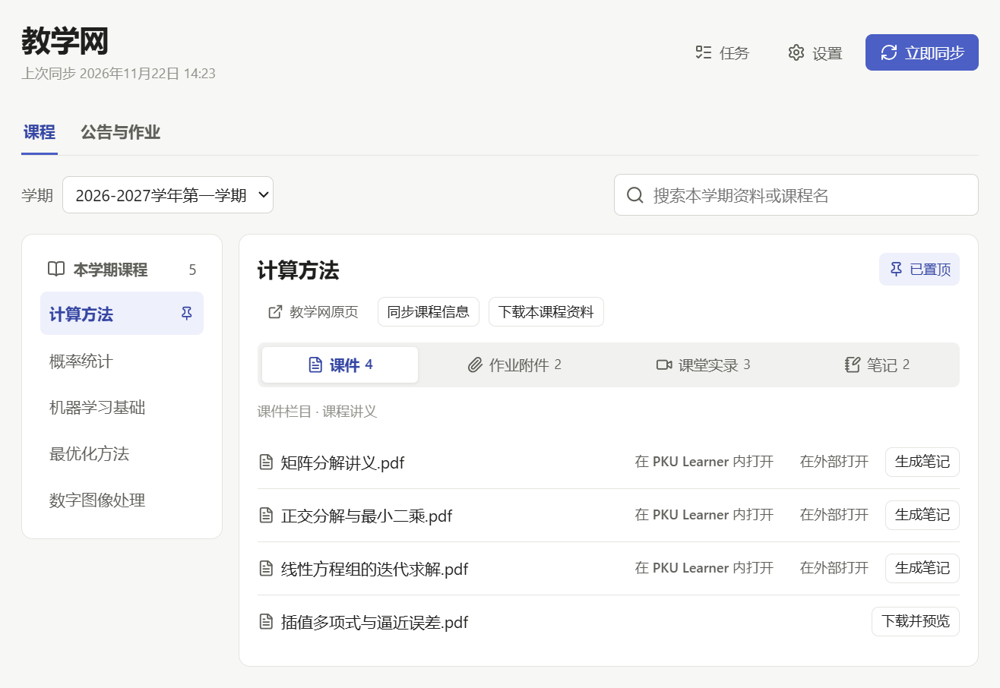
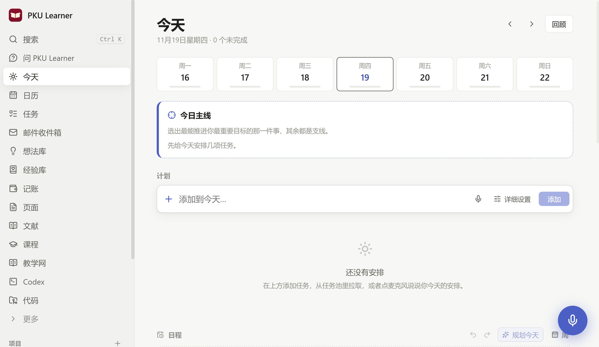
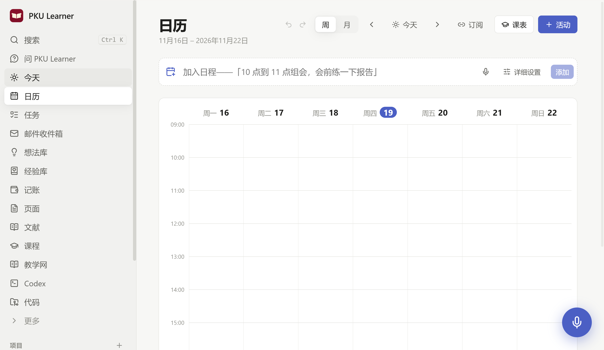
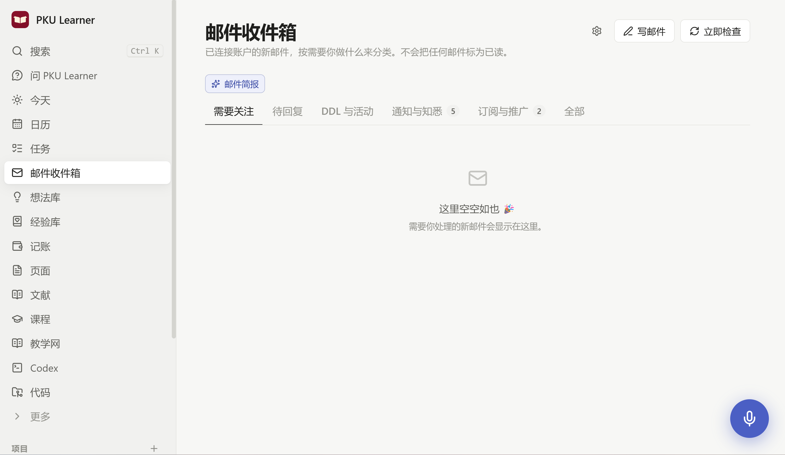

上课前，把讲义收齐
自动同步本学期的课件和作业附件，也可以按课程补下往期资料。同步先查「教学内容」，再查「课程讲义」。
北大教学网桌面助手

置顶常用课程，按课件、作业附件、课堂实录和笔记查看资料。
查看原图自动同步本学期的课件和作业附件，也可以按课程补下往期资料。同步先查「教学内容」，再查「课程讲义」。
选择一节回放，带时间段的转写会单独保存为 Markdown。可以结合配套 PDF 整理课堂笔记，也可以保留回放视频。
在笔记中搜索关键词，或选中文字向 AI 提问。实录笔记可同时参考本节转写，点击答案引用即可回到对应段落。
教学网公告里的考试和作业截止时间，确认后就能加入日历。也可以把日常任务、邮件和论文一起整理。

今天与待办查看本周安排，记下今日任务。
课表与日历把课程、考试和个人安排放在同一周。
邮件收件箱从待回复、通知和截止事项里找到重点。还可用页面整理笔记和项目、阅读翻译论文 PDF，或打开本机终端、Git 仓库与 Codex 会话。
准备好校园卡账号，再选一个存放课程资料的本地文件夹。
在「设置 → 教学网」用自己的校园卡账号登录并选择资料目录，进入教学网同步课程。基础同步、附件下载和本地搜索均可直接使用。
PKU Learner 桌面应用永久免费。使用 AI 功能时，在「设置 → AI 模型」配置自己的 API Key。硅基流动中国站负责语音转写，官方 DeepSeek 用于整理笔记、资料问答和公告摘要。费用及免费额度由对应服务商决定。
课件、作业、笔记和保留的视频按课程存入你选择的文件夹。教学网登录信息加密保存在本机。回放视频默认在生成笔记后清理，可以在设置中选择保留。
扫描课件和回放关键画面在本机识别。使用语音转写时，音频分段发送给硅基流动。生成笔记、问答或摘要时，相关文字发送给配置的官方 DeepSeek。
选择适合这台电脑的安装包。安装后，应用会检查新版本，并在更新前校验文件。
正在读取发布信息。
支持 Windows x64、macOS Apple 芯片和 Intel 芯片，以及 Linux x64。Mac 可在苹果菜单的「关于本机」查看芯片。Linux 需要启用并解锁系统密钥环来保存教学网登录信息。
Windows 安装包未经代码签名，macOS 安装包未经 Apple 公证，首次安装时系统可能提示。可通过公开的 SHA-256 校验文件核对下载结果。